Por dificultad · 14.288 partidas reales
Tier list de dificultadFinal Girl
🇪🇸 ES · 🇬🇧 EN · 🇫🇷 FR · 🇩🇪 DE · 🇮🇹 IT
Vota lo mejor de Final Girl y mira cómo va la comunidad: temporada, película, killer, la caja más fácil y la más difícil. Debajo, la tier list de dificultad con el % de victorias de 14.288 partidas reales.
Tops de la comunidad
Aquí no mandan los datos sino los votos: mejor temporada, mejor película, mejor killer, la caja más fácil, la más difícil, la más inmersiva, la peor y la mejor localización. Vota el tuyo.
Vota
Elige hasta 3 por categoría: el 1º vale 3 puntos, el 2º 2 y el 3º 1.
S: menos del 55% de victorias, lo más duro · A: 55–62% · B: 62–69% · C: 69–75% · D: 75% o más, lo más asequible. Media de todas las partidas: 65,4%.
Ojo: son solo las partidas que la gente registra, no todas las que se juegan. Puede haber sesgo (se apuntan más las victorias) y algunas cajas tienen pocas partidas. Tómalo como guía, no como verdad absoluta.
Dificultad de las cajas
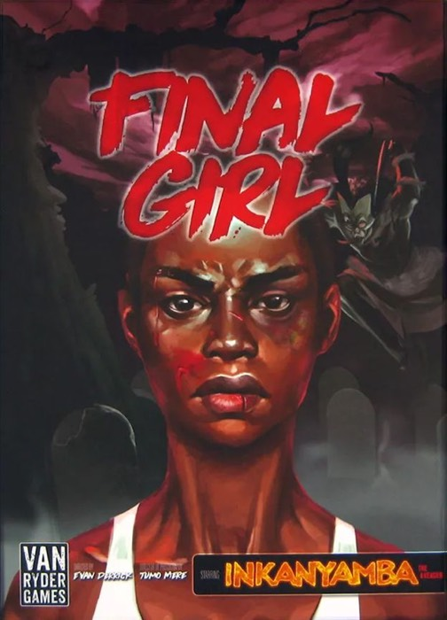
Slaughter in the Groves38% victorias · 146 part.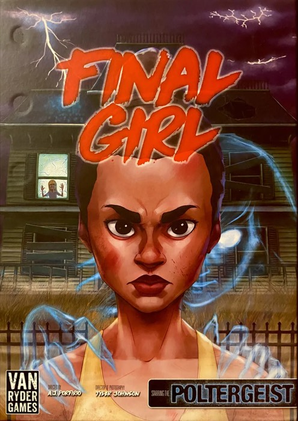
The Haunting of Creech Manor42% victorias · 246 part.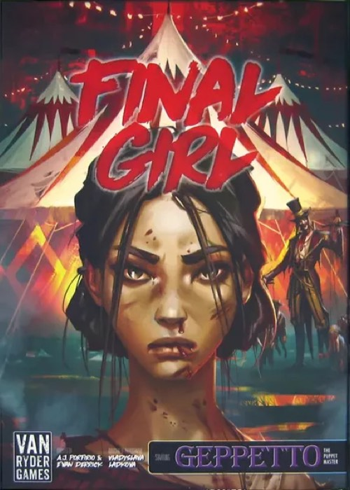
Carnage at the Carnival44% victorias · 236 part.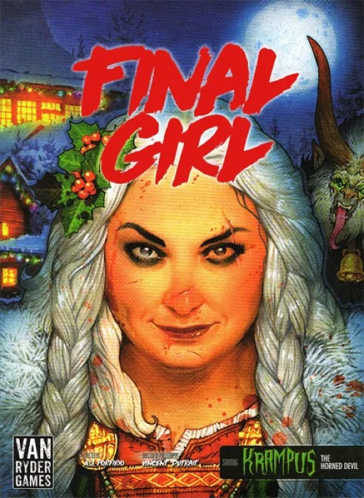
The North Pole Nightmare47% victorias · 182 part.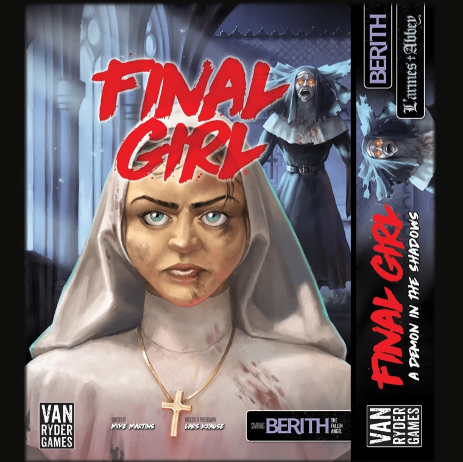
A Demon in the Shadows48% victorias · 71 part. Madness in the Dark50% victorias · 149 part.
Madness in the Dark50% victorias · 149 part.Dificultad de los killers
Solo killers con 60 partidas o más.
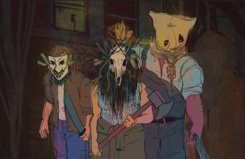
The Intruders62% victorias · 936 part.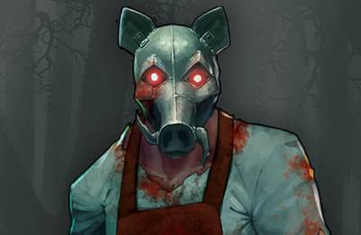
Hans63% victorias · 1.453 part.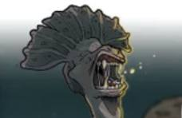
The Eyeless64% victorias · 497 part.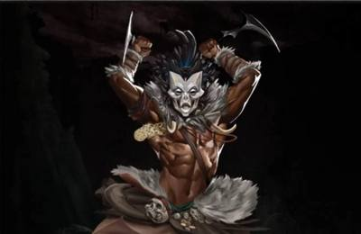
Inkanyamba65% victorias · 645 part.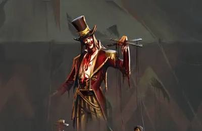
Geppetto65% victorias · 788 part.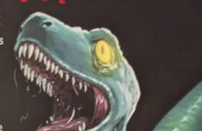
Raptors65% victorias · 75 part.Ratchet Lady67% victorias · 691 part.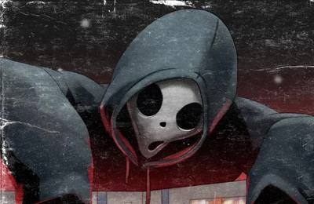
Mort69% victorias · 324 part.Dificultad de las localizaciones
Solo localizaciones con 60 partidas o más.
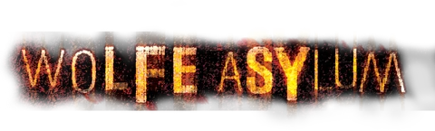
Wolfe Asylum63% victorias · 838 part.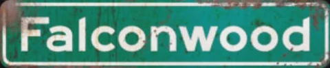
Falconwood73% victorias · 489 part.Preguntas frecuentes
¿Cuál es la caja más difícil de Final Girl?
Slaughter in the Groves, con un 38% de victorias en 146 partidas. Le siguen The Haunting of Creech Manor (42%) y Carnage at the Carnival (44%).
¿Cuál es la caja más fácil de Final Girl?
The Green Terror, con un 77% de victorias en 47 partidas. Detrás van Frightmare on Maple Lane (75%) y Once Upon a Full Moon (75%).
¿Cuál es el killer más difícil de Final Girl?
Terror from the Grave: solo se le gana el 50% de las veces (531 partidas). Después, Razorface (54%) y Poltergeist (57%).
¿Cuál es el killer más fácil?
Terror from Destiny, con un 80% de victorias en 263 partidas.
¿Qué localización es la más dura?
Sacred Groves, con un 45% de victorias en 861 partidas.
¿Cómo se hace esta tier list?
Con el % de victorias de 14.288 partidas reales que la comunidad apunta en una hoja pública. S es menos del 55% de victorias y D, el 75% o más. Se actualiza con los datos.